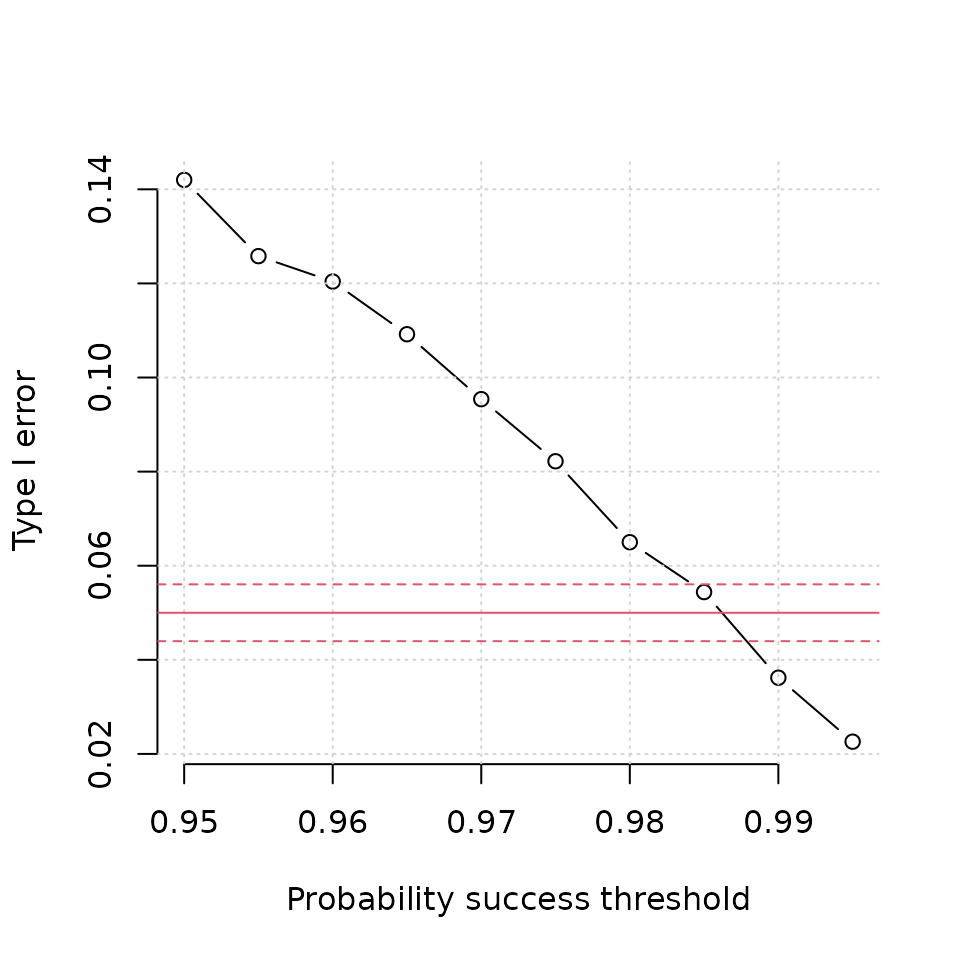

For studies that incorporate multiple looks, it is usually necessary to control the type I error by ensuring the success threshold is sufficiently large that the overall type I error is controlled at the required level. When incorporating a futility stopping rule that is binding and based on posterior predictive probabilities, it can ameliorate the inherent type I error inflation. However, to what degree is unknown, and there are no simple formulae to calculate this. It is therefore necessary to use simulation methods to tune the threshold
Example
Assume we want to compare a new test to a gold standard reference. The gold standard reference is expensive and invasive, meaning that if the new test was reliable, it would be cost effective. It is required that the new test have sensitivity with high probability. In designing the study, the sponsor would like a sample size to have 90% power to reject the null hypothesis at :
Based on an exact binomial sample size calculation, and assuming no interim looks, we can determine the sample size we would need assuming the true sensitivity is 0.824. The value of 0.824 derives from the sensitivity point estimate from a pilot study. The following tells us the number of reference-positive cases we would need:
library(adaptDiag)
ss <- binom_sample_size(alpha = 0.05, power = 0.9, p0 = 0.7, p1 = 0.824)
ss
#> $successes
#> [1] 81
#>
#> $N
#> [1] 104It is necessary to adjust the sample size to allow for reference-negative cases. If we assume the true prevalence is 20%, then we would need a sample size of 104 / 0.2 520. Using this sample size, the sponsor proposes to run multiple early looks under a Bayesian framework subject to the following conditions:
- The trial stops for futility if the posterior predictive probability of eventual success is <5%.
- The trial cannot stop early if the number of reference positive cases is <35.
- The trial stops for early success if the probability of success is sufficiently high, such that the type I error is controlled at the 5% level.
- The trial will make interim analyses at 100, 150, 200, …, 550, 600.
- The expected specificity is 0.963. This parameter is needed for simulation of the cases where is reached.
The probability threshold for early success is unknown at this point, hence it is necessary to explore a range of values to explore at what value the type I error is controlled.
Simulations
We can create a grid of success probability thresholds ranging from 0.950 up to 0.995 as
p_thresh <- seq(0.95, 0.995, 0.005)For each probability determine the type I error. Note: the code below takes about 20 minutes to run.
tab <- NULL
for (i in 1:length(p_thresh)) {
fit_p <- multi_trial(
sens_true = 0.7,
spec_true = 0.963,
prev_true = 0.20,
endpoint = "sens",
sens_pg = 0.7,
spec_pg = NULL,
prior_sens = c(0.1, 0.1),
prior_spec = c(0.1, 0.1),
prior_prev = c(0.1, 0.1),
succ_sens = p_thresh[i],
n_at_looks = seq(100, 600, 50),
n_mc = 10000,
n_trials = 5000,
ncores = 8L)
out <- summarise_trials(fit_p, min_pos = 35, fut = 0.05)
tab <- rbind(tab, out)
}With this, we can look at the type I error by success threshold.
plot(p_thresh, tab$power,
xlab = "Probability success threshold",
ylab = "Type I error",
main = "",
type = "b",
bty = "n")
grid()
abline(h = 0.05, col = 2)
abline(h = 0.05 + 1.96 * sqrt(0.05 * 0.95 / 5000),
col = 2, lty = 2)
abline(h = 0.05 - 1.96 * sqrt(0.05 * 0.95 / 5000),
col = 2, lty = 2)
The solid red line is the intended level of type I error (5%). The dashed red lines either side denote a 95% confidence interval assuming a true type I error of 0.05 with 5000 simulations (as was the case here). We can see that a probability threshold of 0.985 would sufficient control the type I error at the 5% level. The empirically calculated type I error from the simulations in 0.0544.
Once we have determined the threshold required, we can calculate the power.
power <- multi_trial(
sens_true = 0.824,
spec_true = 0.963,
prev_true = 0.20,
endpoint = "sens",
sens_pg = 0.7,
spec_pg = NULL,
prior_sens = c(0.1, 0.1),
prior_spec = c(0.1, 0.1),
prior_prev = c(0.1, 0.1),
succ_sens = 0.985,
n_at_looks = seq(100, 600, 50),
n_mc = 10000,
n_trials = 5000,
ncores = 8L)
summarise_trials(power, min_pos = 35, fut = 0.05)
#> n
#> decision 100 150 200 250 300 350 400 450 500 550 600
#> early win 2 345 1364 830 457 383 341 272 194 146 0
#> late win 0 0 0 0 0 0 0 0 0 0 92
#> no stopping 0 0 0 0 0 0 0 0 0 0 117
#> stop for futility 0 8 82 70 47 44 35 45 62 64 0
#> power stop_futility n_avg sens spec mean_pos
#> 1 0.8852 0.0914 305.99 0.8391559 0.9636968 61.2376The design provides slightly less than 90% power overall. However, on average, the design also only requires 306 subjects, which is far less than the 520 required under a classical design.